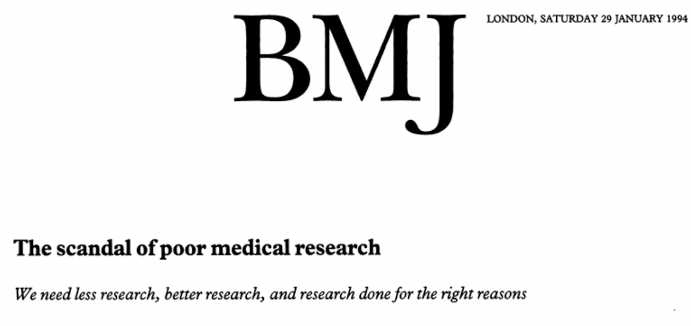
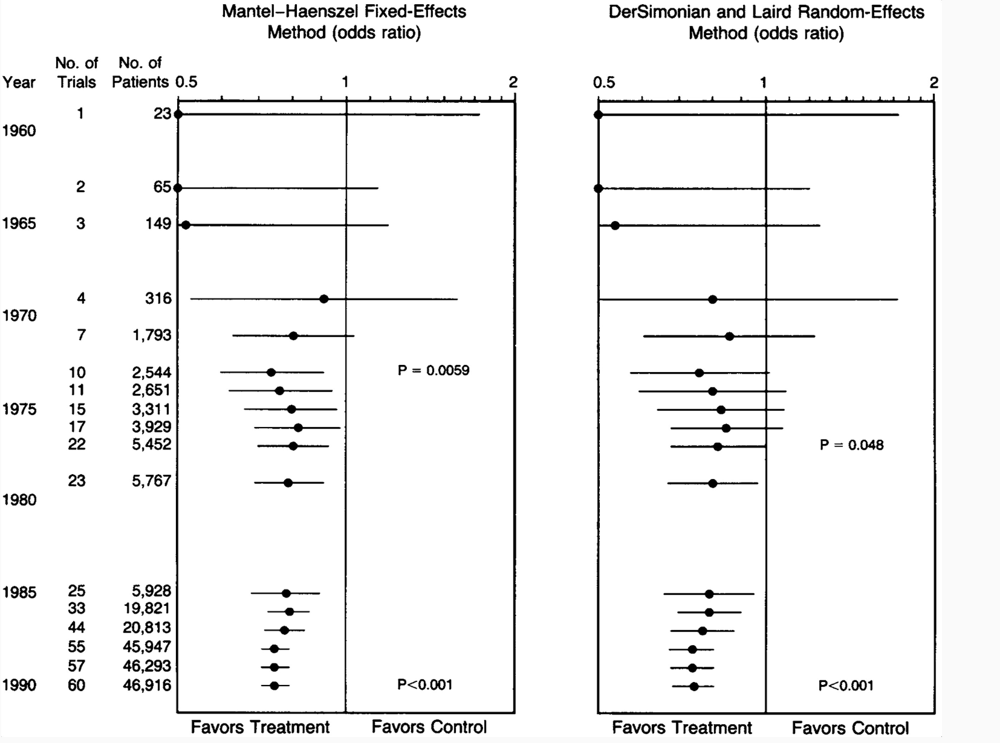
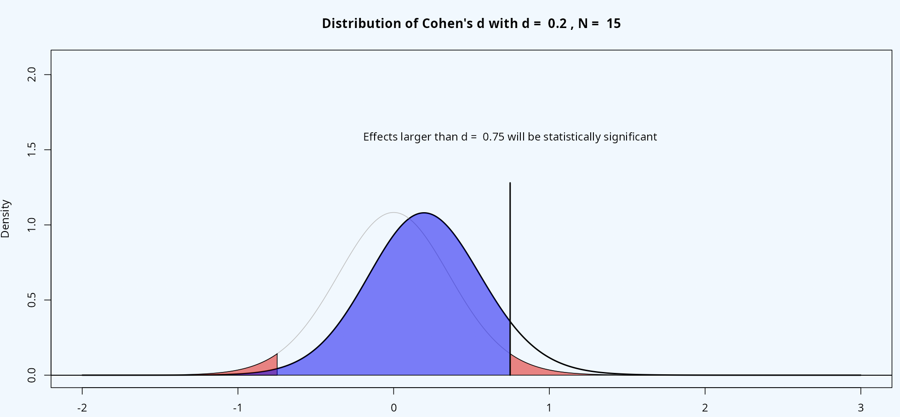
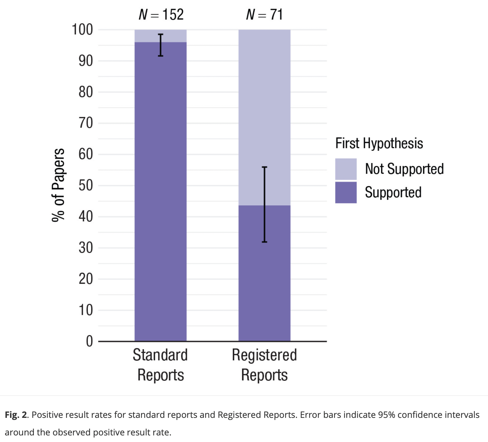
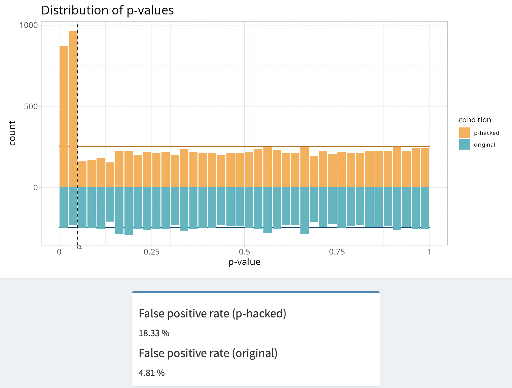
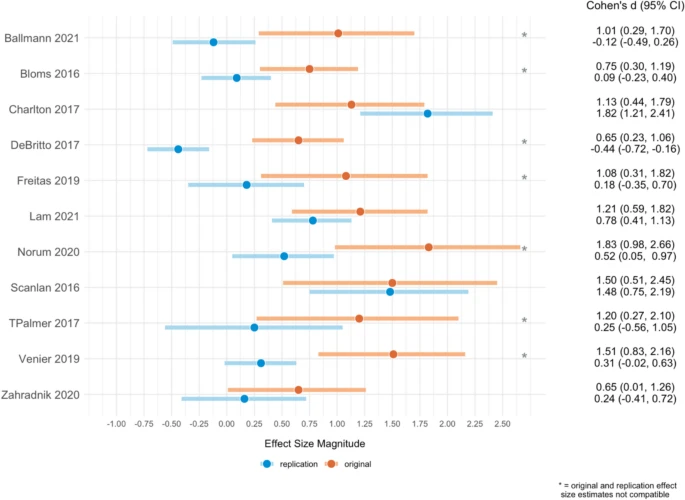
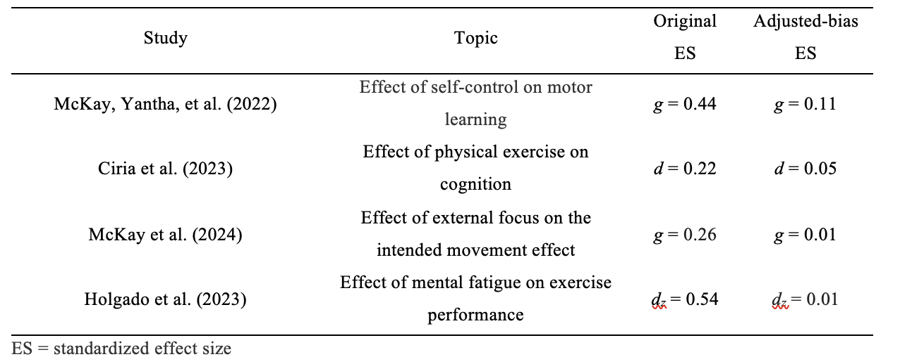
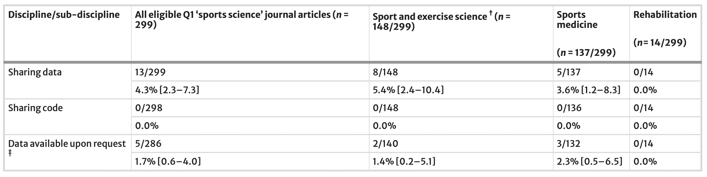

Ethical research should be credible research: Do researchers comply with the Declaration of Helsinki?
Discussion points
Declaration of Helsinki
Informative research vs. research waste
Types of research waste
Reasons for research waste
Potential solutions
Declaration of Helsinki: What it is
The Declaration was developed in 1964 by the World Medical Association
It serves as the international benchmark for ethical conduct in human research, providing high-level principles that guide regulatory bodies, research institutions, and individual researchers
How many of you do know the content of the Declaration of Helsinki?
How many of you have declared to adhere to the Declaration of Helsinki?
Declaration of Helsinki 2013
12. Medical research involving human subjects must be conducted only by individuals with the appropriate ethics and scientific education, training and qualifications. Research on patients or healthy volunteers requires the supervision of a competent and appropriately qualified physician or other health care professional (World Medical Association 2013)
Declaration of Helsinki 2013
21. Medical research involving human subjects must conform to generally accepted scientific principles, be based on a thorough knowledge of the scientific literature, other relevant sources of information, and adequate laboratory and, as appropriate, animal experimentation. […] (World Medical Association 2013)
Declaration of Helsinki 2024
21. Medical research involving human participants must have a scientifically sound and rigorous design and execution that are likely to produce reliable, valid, and valuable knowledge and avoid research waste […] (World Medical Association 2025)
Declaration of Helsinki 2024
36. Researchers, authors, sponsors, editors, and publishers all have ethical obligations with regard to the publication and dissemination of the results of research. Researchers have a duty to make publicly available the results of their research on human participants and are accountable for the timeliness, completeness, and accuracy of their reports. All parties should adhere to accepted guidelines for ethical reporting. Negative and inconclusive as well as positive results must be published or otherwise made publicly available (World Medical Association 2025)
Informative research
The process of gathering and analyzing data to produce trustworthy knowledge
It is carried out through ethical and rigorous methods, and communicated transparently and without bias, enabling peers to verify and build upon the findings
Why do we do research?
To test the the efficacy/effectiveness of interventions
Is intervention A more effective than intervention B in reducing time to return-to-play in football players after injury?
Research waste
Research that fails to produce reliable or relevant results that cannot be be used to inform decision making
Research waste
Waste at four stages of research
Question -> Design and analysis -> Reporting -> Publication
1-Research question
Irrelevant/low priority questions addressed
Redundancy
Example: Cumulative Meta-Analysis of Therapeutic Trials for Myocardial Infarction (Lau et al. 1992)
Thirty-three trials evaluating this therapy were performed between 1959 and 1988
Statistically significant reduction in mortality (odds ratio, 0.74; 95% CI [0.59 to 0.92]) was achieved in 1973, after only eight trials involving 2432 patients
The results of the 25 subsequent trials (34,542 additional patients) through 1988 had little or no effect on the odds ratio establishing efficacy, but simply narrowed the 95% CI
Two very large trials in 1986 (11,712 patients) and in 1988 (17,187 patients) did not modify the already established evidence of efficacy
Cumulative Meta-Analysis of Therapeutic Trials for Myocardial Infarction

Example in sports and exercise science: The effect of self-talk interventions on sports/motor performance
Since Hatzigeorgiadis et al. (2011) meta-analysis the number of studies conducted examining the effects of self-talk interventions on sport/motor performance has roughly doubled
35 new studies published from November 2011 up to November 2023
The overall effect in Hatzigeorgiadis et al. (2011) was 0.48 95% CI (0.38; 0.58) and after adding newer studies the overall effect was 0.47 95% CI (0.39; 0.56) in Corcoran and Steele (2024)
Relevant research question
New research should be set in the context of an evidence gap and should involve stakeholders when possible
2- Study design
Conduct studies that do not answer the research question (Mesquida et al. 2025d). For instance:
23 out of 350 studies tested a hypothesis of equivalence using a classic null hypothesis test (Mesquida et al. 2025a)
Testing for treatment effects by separate analyses of changes from baseline in each group is a misleading approach
2- Study design
Invalid a priori power analyses (Mesquida et al. 2025b):
Mean sample size of ~ 30 participants
40% (139 out of 350) of hypothesis-testing studies reported conducting an a priori power analysis.
No significant difference in sample size between studies that reported an a priori power analyses and those that did not
No significant difference in the proportion of hypotheses supported between studies that reported an a priori power analyses and those that did not
Potential reasons: sample size bamba (Schulz and Grimes 2005), invalid effect sizes, inflated effect sizes
How a power analysis implicitly reveals the smallest effect size you care about

2- Study design
Low statistical power: an analysis of 269 hypothesis-testing studies showed that the average statistical power was 11% (Mesquida et al. 2025a)
Implication: With such low power, the chance of detecting true effects is extremely low
Flipping a coin (50% probability).
Why designing studies with high statistical power is important?
1- Interpretation of null findings
- If a study is designed with low power (e.g., 20%), a null significant result cannot be interpreted because it could be due to that the effect size is smaller than expected or non-existent.
Why designing studies with high statistical power is important?
2- Narrower confidence intervals
Example 1: study with 20 participants yields a wider 95% CI [-0.72; 1.16]
Example 2: study with 200 participants yields a narrower 95% CI [-0.75; -0.23]
2- Study design
Lack of transparency
Framing your study as confirmatory when is exploratory (Ditroilo et al. 2025)
Vague and unfalsifiable hypotheses (Mesquida et al. 2025d)
3- Selection bias
Publication bias
Flexibility in data analysis
Publication bias

Flexibility in data analysis

Selection bias and statistical power in sports and exercise science
Consequences of selection bias and studies with underpowered designs

Results of the Sports Science Replication Project (Murphy, Caldwell, Mesquida, et al. 2025)
Inflated type I error rate: 56% of the 25 analysed replication studies had a statistically significant p-value similar to the original studies
Inflated effect sizes: median percentage decrease in magnitude from the original to the replication effect size estimate equal to 75% for all of the replication effect sizes
Only 36% of replication and original effect size estimates were compatible
Results from other meta-scientific studies

4- Reporting of statistical information and data sharing
“This project faced many practical challenges when preparing studies for replication, specifically the poor reporting of statistical information, the availability of original raw data […]” (Murphy, Caldwell, and Warne 2025)
Out of 350 hypothesis-testing hypotheses, 57% (46/81) could not be recomputed into an exact p-value due to poor reporting of statistical information or availability of original raw data (Mesquida et al. 2025a)
4- Reporting of statistics and data sharing

Why sharing data and code are important?
Verify results: Allow peers to reproduce and confirm the findings
Reuse data: Facilitate meta-analyses, replications, secondary analyses, or new research projects
Increase transparency: Promote trust and accountability in research
Research waste also affect meta-analyses
In the 30 most cited meta-analyses in S&C research, Kadlec et al. (2023) found that:
Almost 45% contained at least one effect size that was mistakenly calculated using SE rather than SD.
45% failed to account for effect size dependency
In 96 meta-analyses published in Sports Medicine, Mesquida et al. (2025c) found that:
16% of 96 meta-analyses contained data to reproduce study effect sizes
Many combined studies with different designs (e.g., within- and between-designs, RCT and non-RCT)
34% did not account for effect size dependency
Summary
Research waste in the form of studies that do not answer the research question, inflated effect sizes, study designs with low power, poor reporting of statistical practices and lack of data sharing and low methodligical quality of meta-analyses
We, as a community, are not properly trained to conduct informative research
Drivers of research waste
Wrong incentives:
Quantity vs. quality: mass produce sports and exercise science research for career purposes
Preference for studies that report positive findings
Compete for limited resources
Drivers of research waste
Time constraints: lack of time to develop expertise and skills
Incompetence: insufficient training
How to avoid research waste
Long-term solutions
Reward researchers not for the number of publications but for the quality of their research
More time for improving research competences
Improve statistical training at BSc and MSc
How to avoid research waste
Mid-term solutions
Science as a collaborative effort where each member brings specialized expertise
Big Team Science
Question -> Design -> Analysis Plan -> Data collection -> Analysis execution -> Reporting -> Interpretation -> Data stewardship
Science as a collaborative effort
The goal is not to conduct experiments alone or with small group of collaborators which may lack expertise in some areas
The goal is to support and ehance collective scientific research
Science as a collaborative effort
- Theorists -> develop frameworks or hypotheses to explain phenomena
- Methodologists -> statisticians ->design studies and slect appropiate methods
- Data collectors -> gather and organize raw data
- Experts in interpreting effect sizes -> assess the practical significance of findings
- Data stewards -> manage, curate and maintain datasets to ensure FAIR principles and reproducibility
Specialization
- 12. Medical research involving human participants must be conducted only by individuals with the appropriate ethics and scientific education, training and qualifications. Such research requires the supervision of a competent and appropriately qualified physician or other researcher (World Medical Association 2025)
How to avoid research waste
Short-term solutions
Collaboration with applied statisticians (Sainani et al. 2021)
Registered Reports (?)
References
Altman, D. G. 1994. “The Scandal of Poor Medical Research.” British Medical Journal 308 (6924): 283–84. https://doi.org/10.1136/bmj.308.6924.283.
Borg, David N., Joshua J. Bon, Kristin L. Sainani, Brenton J. Baguley, Nicholas J. Tierney, and Christopher Drovandi. 2020. “Comment on: ‘Moving Sport and Exercise Science Forward: A Call for the Adoption of More Transparent Research Practices’.” Sports Medicine 50 (8): 1551–53. https://doi.org/10.1007/s40279-020-01298-5.
Corcoran, Hannah, and James Steele. 2024. Cumulative Evidence Synthesis and Consideration of "Research Waste" Using Bayesian Methods: An Example Updating a Previous Meta-Analysis of Self-Talk Interventions for Sport/Motor Performance. SportRxiv. https://doi.org/10.51224/SRXIV.348.
Ditroilo, Massimiliano, Cristian Mesquida, Grant Abt, and Daniël Lakens. 2025. “Exploratory Research in Sport and Exercise Science: Perceptions, Challenges, and Recommendations.” Journal of Sports Sciences, April, 1–13. https://doi.org/10.1080/02640414.2025.2486871.
Hatzigeorgiadis, Antonis, Nikos Zourbanos, Evangelos Galanis, and Yiannis Theodorakis. 2011. “Self-Talk and Sports Performance: A Meta-Analysis.” Perspectives on Psychological Science 6 (4): 348–56. https://doi.org/10.1177/1745691611413136.
Kadlec, Daniel, Kristin L. Sainani, and Sophia Nimphius. 2023. “With Great Power Comes Great Responsibility: Common Errors in Meta-Analyses and Meta-Regressions in Strength & Conditioning Research.” Sports Medicine 53 (2): 313–25. https://doi.org/10.1007/s40279-022-01766-0.
Lau, Joseph, Elliott M. Antman, Jeanette Jimenez-Silva, Bruce Kupelnick, Frederick Mosteller, and Thomas C. Chalmers. 1992. “Cumulative Meta-Analysis of Therapeutic Trials for Myocardial Infarction.” New England Journal of Medicine 327 (4): 248–54. https://doi.org/10.1056/NEJM199207233270406.
Mesquida, Cristian, Jennifer Murphy, Joe Warne, and Daniël Lakens. 2025a. On the Replicability of Sports and Exercise Science Research: Assessing the Prevalence of Publication Bias and Studies with Underpowered Designs by a z-Curve Analysis. SportRxiv. https://doi.org/10.51224/SRXIV.534.
Mesquida, Cristian, Jennifer Murphy, Joe Warne, and Daniël Lakens. 2025b. The Prevalence, Reporting Practices, and Methodological Quality of a Priori Power Analyses in Sports and Exercise Science Research. SportRxiv. https://doi.org/10.51224/SRXIV.575.
Mesquida, Cristian, Joe Warne, and Daniël Lakens. 2025c. A Scoping Review of the Transparency, Reporting Practices and Methodological Rigor of Meta-Analyses Published in Sports Medicine. SportRxiv. https://doi.org/10.51224/SRXIV.576.
Mesquida, Cristian, Joe Warne, and Daniël Lakens. 2025d. What Is Your Hypothesis? On the Importance of Knowing Your Hypothesis Before Conducting a Hypothesis Test. SportRxiv. https://doi.org/10.51224/SRXIV.577.
Murphy, Jennifer, Aaron R. Caldwell, Cristian Mesquida, et al. 2025. “Estimating the Replicability of Sports and Exercise Science Research.” Sports Medicine, ahead of print. https://doi.org/10.1007/s40279-025-02201-w.
Murphy, Jennifer, Aaron R. Caldwell, and Joe P. Warne. 2025. “Reflections on Conducting a Large Replication Project in Sports and Exercise Science.” Sports Medicine, ahead of print, June. https://doi.org/10.1007/s40279-025-02200-x.
Sainani, Kristin L., David N. Borg, Aaron R. Caldwell, et al. 2021. “Call to Increase Statistical Collaboration in Sports Science, Sport and Exercise Medicine and Sports Physiotherapy.” British Journal of Sports Medicine 55 (2): 118–22. https://doi.org/10.1136/bjsports-2020-102607.
Scheel, Anne M., Mitchell R. M. J. Schijen, and Daniël Lakens. 2021. “An Excess of Positive Results: Comparing the Standard Psychology Literature With Registered Reports.” Advances in Methods and Practices in Psychological Science 4 (2): 1–12. https://doi.org/10.1177/25152459211007467.
Schulz, Kenneth F., and David A. Grimes. 2005. “Sample Size Calculations in Randomised Trials: Mandatory and Mystical.” The Lancet 365 (9467): 1348–53. https://doi.org/10.1016/S0140-6736(05)61034-3.
World Medical Association. 2013. “World Medical Association Declaration of Helsinki: Ethical Principles for Medical Research Involving Human Subjects.” JAMA 310 (20): 2191–94. https://doi.org/10.1001/jama.2013.281053.
World Medical Association. 2025. “World Medical Association Declaration of Helsinki: Ethical Principles for Medical Research Involving Human Participants.” JAMA 333 (1): 71–74. https://doi.org/10.1001/jama.2024.21972.